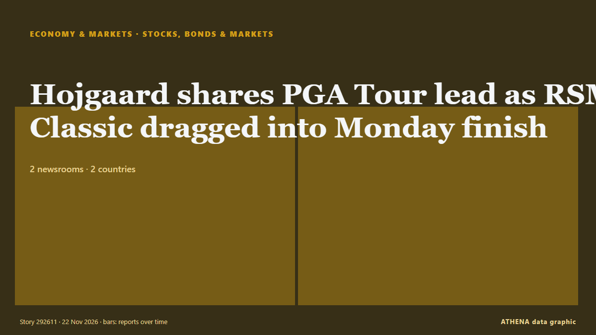

Μετοχές, ομόλογα & αγορές
ΧορηγούμενοΠαρουσιάζεται από  Cybernetics and Artificial Intelligence Lab Welcome to the Cybernetics and Artificial Intelligence Laboratory, established at the Department of Business Administration of the National and Kapodistrian University of Athens. The lab is headed by Professor Dimitrios Thomakos. The lab aims to do research that can be published in top venues. Our research uses tools and methods of Artificial Intelligence, and lies in the following areas: - Forecasting - Decision making - Cyber security - Finance We are always looking forward to collaborating with exceptional students!
Cybernetics and Artificial Intelligence Lab Welcome to the Cybernetics and Artificial Intelligence Laboratory, established at the Department of Business Administration of the National and Kapodistrian University of Athens. The lab is headed by Professor Dimitrios Thomakos. The lab aims to do research that can be published in top venues. Our research uses tools and methods of Artificial Intelligence, and lies in the following areas: - Forecasting - Decision making - Cyber security - Finance We are always looking forward to collaborating with exceptional students!
| 10 Νοε | 0 |
|---|---|
| 11 Νοε | 0 |
| 12 Νοε | 0 |
| 13 Νοε | 1 |
| 14 Νοε | 0 |
| 15 Νοε | 0 |
| 16 Νοε | 1 |
| 17 Νοε | 0 |
| 18 Νοε | 1 |
| 19 Νοε | 12 |
| 20 Νοε | 8 |
| 21 Νοε | 0 |
| 22 Νοε | 1 |
| 23 Νοε | 0 |
Οι τίτλοι των ειδήσεων παρουσιάζονται στα αγγλικά, όπως δημοσιεύτηκαν.

Hojgaard shares PGA Tour lead as RSM Classic dragged into Monday finish
Rasmus Hojgaard holds a share of the lead heading into a weather-delayed final day of the RSM Classic, with England's Marco Penge in contention as he looks to secure his PGA Tour future. από Sky Sports
Rep. Casten seeks to curb prediction market insider trading with DOJ whistleblower program
Rep. Sean Casten, who could have a top spot in Congress next year, is clamping down on insider trading in prediction markets. από The Block
Wall Street ends sharply lower on AI selloff, S&P 500, Dow in correction
US stocks extended their rout on Friday, and the S&P 500 and the Dow both confirmed corrections after Anthropic’s momentous debut fell flat, exacerbating worries about the AI trade that has driven… από Dawn
Anthropic set to surge, but indices fall back
Anthropic IPO day isn't going so well for the rest of the market, says Chris Beauchamp, Chief Market Analyst at online trading and investing platform IG. από FXStreet
Anthropic IPO fails to calm AI jitters as tech stocks plummet
Anthropic shares briefly rocketed from an initial offering price of $83 to over $110 on Thursday, but plunged back below $89 at the close on Friday. από Le Monde (English)
Robert Pattinson said he would wait 20 years to ‘go for’ Bond – he got it in 14
It’s reported that the announcement about who will be the next James Bond is now imminent - with plenty of actors still in the frame to take on the iconic role. από The Scotsman
Anthropic’s IPO puts AI’s circular financing boom to the test
Anthropic faces enormous compute commitments as it goes public, but its biggest infrastructure partners, including Amazon and Google, could continue profiting from AI even if Anthropic loses its lead. από TechCrunch
19 sperm whales die after stranding at New Zealand beach
Department of Conservation Kaitaia operations manager Laree Furniss says 19 sperm whales have died on Ninety Mile Beach. από Stuff
Stocks slide as Anthropic IPO fails to calm AI fears
Investor confidence in AI has been shaken by worries about the technology's profitability and the massive debt needed to fund and build related infrastructure. από Free Malaysia Today
Nasdaq futures jump on renewed AI optimism ahead of Anthropic’s market debut
Nasdaq futures rose more than 2% on Thursday after Anthropic priced its IPO above the marketed range, fueling expectations for a strong market debut and lifting sentiment toward AI-linked stocks… από The San Juan Daily Star
U.S. AI startup Anthropic floats shares on Nasdaq with record IPO
Luxury home sellers are offering multimillion-dollar mansions in exchange for Anthropic stock as the AI giant's IPO approaches. από Business Insider
Anthropic becomes one of world’s most valuable public companies in stock market debut
Anthropic is the first purely AI company to be publicly listed, creating a test for the entire industry. από BBC News
European shares head for steepest weekly drop since March
LONDON: European shares opened lower on Friday and were headed for their steepest weekly decline since March, as investors continued to unwind artificial intelligence (AI)-linked bets after… από New Straits Times
Elev8 launches CFD trading on Anthropic, PBC (ANT) following historic IPO
Elev8, a global Contracts for Difference (CFD) broker, announced it has added Anthropic, PBC (Nasdaq: ANT), a company behind the Claude AI platform, to its tradable asset lineup under the ticker… από investingLive (ForexLive)
Low-profile VCs set for $100bn windfall from Anthropic IPO
Group of lesser-known investors on track for bumper returns as AI group prepares to price its shares on Wednesday. από Financial Times - Markets
Dude, Where Are My Billions? Ashton Kutcher Edging Closer to Super Rich Status After Anthropic IPO
The actor and famed tech investor's venture capital firm, Sound Ventures holds a roughly 0.5 percent stake in the AI giant. από The Hollywood Reporter
Anthropic IPO draws rush of Japan retail investors
The BBC's Samira Hussain speaks to a retail investor eagerly waiting for the AI company's stock to go live on Thursday. από BBC Business
Anthropic valuation soars above £1.5 trillion in record stock market float
It has eclipsed Elon Musk’s bumper SpaceX float in June as the biggest stock market debut of all time. από Evening Standard (London)
Anthropic Shares End First Day Of Trading Up 17% In Volatile Session As AI Giant Goes Public
UPDATED after market close: Anthropic shares ended their first day of trading at $97.17, up 17% from their $83 IPO price, but off their high for the day, in a volatile session. από Deadline